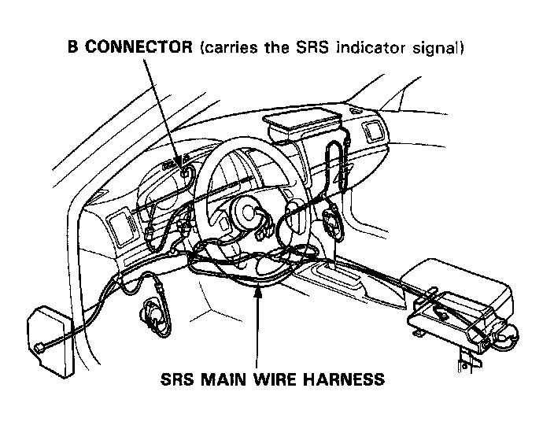
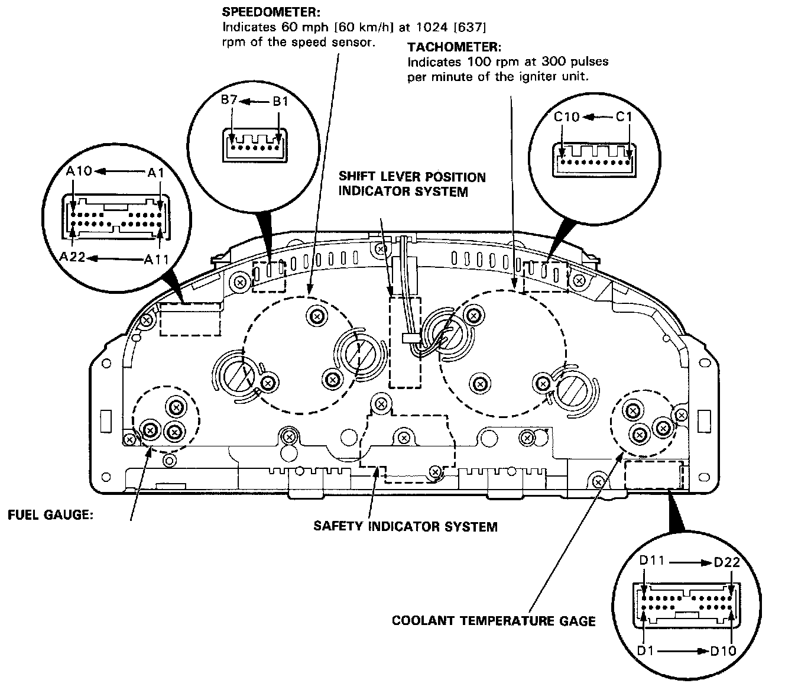

Tachometer: Locations


CAUTION:
All SRS electrical wiring harnesses are covered with yellow outer insulation.
^ When disconnecting the SRS wire harness, install the short connector to the airbag(s) then disconnect the wire harness. Service and Repair
^ Replace the entire affected SRS harness assembly if there is an open circuit or damage to the wiring.
^ After installation of the gauge assembly, recheck the operation of the SRS indicator light.